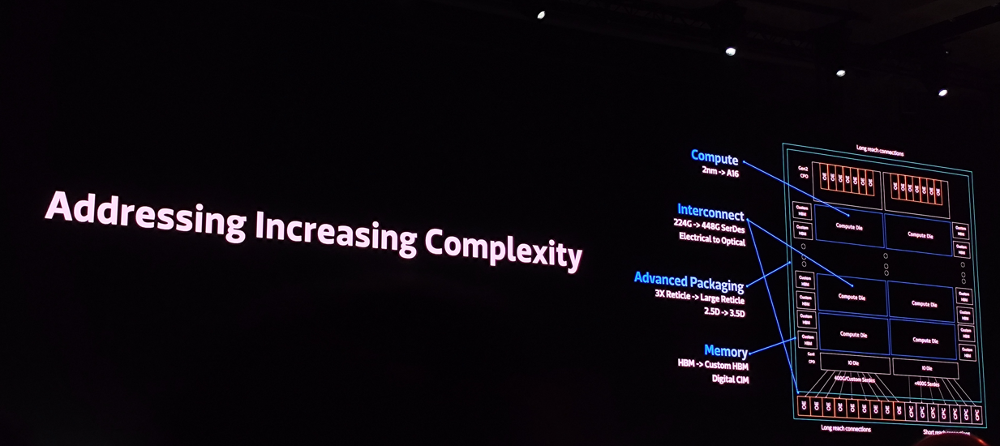
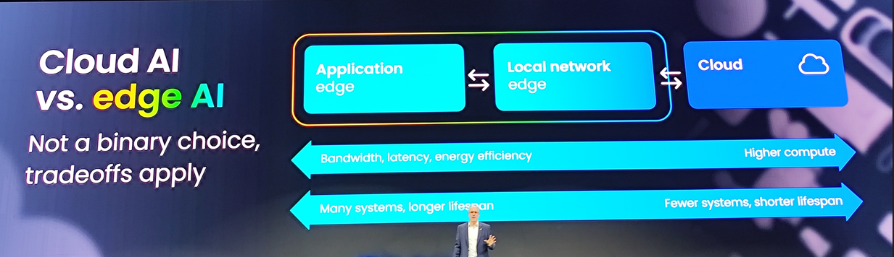

tags:
- 久朝官網優化內容：明確品牌願景、使命、核心價值和市場定位
聚焦於高階工業通風設備，以高單價、技術含量為市場區隔。同時間能把原有的產品線做出更優質的服務，讓客戶可以放心的部署我們產品到生產線中，不必擔心停機帶來的損失。我們的核心價值為 自主掌握研發的關鍵技術和驗證能力，而且持續推動國內高效率通風機產品的發展，以實現更高的附加價值。
品牌策略：明確品牌願景、使命、核心價值和市場定位。
以誠信啟動未來，永續經營的智慧，卓越品質的匠心，顧客體驗的新高度。我們致力於透過洞察前瞻技術，賦予團隊非凡的創造力，開創自動化風機的新紀元。
作為一個致力於數位化和智慧化的高階工業通風設備製造商，專注於提供技術含量高的定制化解決方案。同時，計畫著重於擴展國際市場的影響力，進而在全球範圍內提升品牌的認知度和競爭力。
視覺識別：創建或更新品牌標誌、色彩方案，以及整體視覺風格。
行銷與溝通：制定品牌故事，並透過視覺元素傳達品牌形象。
產品與服務分類：設計清晰的產品分類系統，提升產品溝通效率。
ref:https://www.youtube.com/@chiuchauoffical8967
品牌資產管理：開發統一的品牌識別元素和設計應用物，如型錄、簡報模板等。
國際市場溝通：強化品牌在全球市場的存在感，並適應多元文化的需求。
專案目的：
隨著我們公司商標認證即將更新，本次設計專案旨在提升公司的市場能見度，並注入新穎活力和創新理念。我們的目標是讓品牌不僅延續其傳統價值，更能在新世代中持續發展和茁壯。本次轉型意在突破傳統產業的限制，融合新創和科技公司的經營模式，從而提供更具競爭力的產品和解決方案。
我們希望透過這次品牌重塑，引領整個產業及其供應鏈進行升級，並著眼於國際市場，擴大公司的全球足跡。這不僅會提高我們在國際市場的辨識度，也有助於我們的品牌在多元文化中展現其獨特魅力，成為一個具有國際視野和影響力的品牌。
預期成果：
這些資料幫助設計團隊掌握現況與限制條件：
## ✅ 既有配色與文化背景說明 — 紅綠五行
久朝企業之工廠建築與設備長期以「綠色＋紅色」為主要配色，並非隨意選擇，而是源自創辦人對於東方哲學「五行生剋」概念的深層信仰與期許。
### 🔶 色彩含義與五行哲學
- **綠色：木**
象徵「生長、根基、延展」。在五行中，木代表生機與技術之源，對應久朝穩健紮實的製造能力與工程底蘊。
- **紅色：火**
象徵「活力、擴張、熱情」。五行中木生火，寓意技術累積（木）將推動企業成長與市場熱度（火）——即是「木生火，事業興」。
### 🔶 色彩對比與設計挑戰
紅與綠為天然的**補色對比組合**，其對比度強烈，視覺上富有張力與吸引力，若運用得當，能營造強烈的記憶點與品牌識別性。然而，也因其對比強烈，若處理不當則易產生視覺衝突或文化誤解（例如與聖誕節等色彩聯想混淆）。
### 🔶 品牌策略建議
- 保留紅綠為品牌文化根源的象徵色，並透過**色彩比例、階調調整、輔助色系搭配**等設計手法，使其更具現代感與一致性。
- 將「木生火」作為品牌設計背後的哲學基礎，提升故事性與品牌精神的傳遞。
- 配色應與品牌個性同步調整，例如強化「技術扎實、創新驅動、節能導向」的設計語言。
企業核心資訊
產品與服務資料
久朝企業有限公司企業識別系統建置專案執行指導綱要
目標是成為「工業技術領域中的 Vercel × Xiaomi」——
專業中保留人味、工程中具備品味、產品不只是性能，更是貼近人心的工具。
備註：本專案以「久朝品牌轉型與再定位」為主軸，並以「工程專業 × 青年親和 × 在地信仰傳承」為核心發展軸線。
溝通管道：定期會議、聯絡方式
定期線上會議-每個禮拜四小時討論
每個月會面討論一次
回饋與修訂：
提交初稿：設計團隊提交初步設計草稿。
初步評估：相關部門進行初步評估，對設計草稿提出意見和建議。
彙整反饋：將所有反饋彙整並優先排序。
設計團隊修訂：根據收到的反饋，設計團隊進行必要的修訂。
再次提交與評估：提交修改後的設計，並進行進一步的評估與討論。
最終確認：經過多輪的修訂和反饋後，達成共識並確認最終設計。
● 貴司目前品牌上遇到什麼樣的挑戰呢？
我們目前面臨的主要挑戰是品牌老化。隨著市場環境的變化，我們的品牌形象需要注入新血，以更好地體現我們的創新和現代價值。這意味著我們需要在保持品牌核心價值的同時，注入新的活力和視覺元素，從而使我們的品牌更加符合當前市場和消費者的期望。我們的重點是通過設計來實現這一轉型。
● 對此次專案的期待是什麼呢？透過此次專案解決哪些問題？（是希望從策略面優化品牌 還是僅有企業識別形象設計上的需求？）
我們希望透過這次品牌重塑，引領整個產業及其供應鏈進行升級，並著眼於國際市場，擴大公司的全球足跡。這不僅會提高我們在國際市場的辨識度，也有助於我們的品牌在多元文化中展現其獨特魅力，成為一個具有國際視野和影響力的品牌。
企業識別形象設計上的需求
● 承上，此次專案會期待執行哪些項目，如有完整的計劃書能否先提供給我們，較能幫助我們能聚焦的報價細節。
可以，如附件
● 預計此專案啟動與完成的時間點？
最快可以過年後提案，預計六個月結案
● 有無特殊的活動節點？（如30週年慶?對外品牌發表會？大型國際展會？上市上櫃法說會？經銷商說明大會？）
沒有，商標明年四月到期
● 此專案預算規劃？（基礎的品牌優化專案預算請規劃150萬以上，方能產生初步的成效）
40-60萬，只需要設計物產出
● 此專案參與的核心團隊有哪些呢？（建議Top down老闆或此專案決策者參加 會較有利品牌專案順利進行。）
智能風機營運單位共計四人，統籌公司內部意見
● 之前是否有配合過的相關的管顧或設計公司進行品牌相關工程呢？若有，是否可以提供品牌管理手冊給我，以作為後續提案建議的判斷與參考呢？但因有聽Jim 提到貴司是第一次進行整個形象工程的執行，如果沒有可以乎略。
沒有:(
● 與此同時，是否有同步諮詢其他家管顧公司呢？是哪幾家呢？（普羅也可依照貴司的期待協助建議適合的管顧公司）
我們
沒有，我們只聯繫到設計公司
協助品牌找出差異化與定位機會：
目標客群輪廓（Persona）
- B2B 客戶角色：採購、技術人員、業主等
- 客戶在意的因素：交期、售後、品牌信任、創新性？
- 品牌曝光場域：展覽、簡報、工程說明會等
競爭對手分析
- 競品品牌的視覺風格與語調（Tone of Voice）
- 競爭優勢與設計語言
- 與久朝之間的區隔點與缺口
產業趨勢洞察
- 綠色製造、碳管理、智慧工廠等新趨勢
- 可轉化為品牌資產的趨勢（如：風流可視化）
| 角色 | 背景 | 主要目標 | 在意點 |
|---|---|---|---|
| 採購人員 | 中大型製造業、營造工程公司 | 降低採購風險與成本 | 交期穩定、售後有保障、價格具競爭力、品牌信賴感 |
| 技術人員 / 工程師 | 空調系統整合商、設備商 | 找到符合規範與效率需求的產品 | 規格完整、效率高、安裝維護容易、有技術支援 |
| 專案業主 / 工程顧問 | 營造案主、建築師、政府標案方 | 項目順利如期交付、形象與效益兼顧 | 專業度、創新性、節能證明、品牌形象 |
| 項目 | 描述 |
|---|---|
| 姓名 | 沈雅文（Shen Ya-wen） |
| 年齡 | 42 歲 |
| 職稱 / 公司 | 採購主管 / 精密金屬零件製造廠（200+員工） |
| 工作內容 | 管理大型設備採購案，控管成本與交期風險，維護長期供應商關係 |
| 目標 | 找到價格合理、交期穩定、維修少、服務到位的設備供應商 |
| 痛點 | 被上層壓價、現場不斷反映設備問題、交期拖延帶來罰款風險 |
| 在意重點 | 售後反應速度、交期保證、品牌信賴度、是否是已合作大廠指定供應商 |
| 資訊來源 | 展覽、產業同業推薦、LINE業務群組、工程設備雜誌、官網DM |
| 語氣偏好 | 專業簡明、重點明確、有實際案例佐證 |
| 代表語句 | 「我們不是要最便宜的，我們要最不出包的。」 |
| 項目 | 描述 |
|---|---|
| 姓名 | 李威廷（Lee Wei-Ting） |
| 年齡 | 35 歲 |
| 職稱 / 公司 | 技術總監 / 空調系統整合公司（50人） |
| 工作內容 | 設計整合方案、審視產品規格、模擬效率、協助安裝與調試 |
| 目標 | 找到高效率、相容性佳、安裝簡便且有技術支援的設備 |
| 痛點 | 技術圖紙不清、後續遇到問題找不到窗口、安裝空間卡關 |
| 在意重點 | CAD 檔案是否齊全、產品是否經測試、是否能遠端監控／升級 |
| 資訊來源 | 技術論壇、Line 工程社群、既有合作夥伴介紹、品牌技術白皮書 |
| 語氣偏好 | 技術導向、明確規格、有圖有真相 |
| 代表語句 | 「資料不齊我們沒辦法畫圖，沒圖怎麼安裝？」 |
| 項目 | 描述 |
|---|---|
| 姓名 | 王建民（Wang Chien-Ming） |
| 年齡 | 48 歲 |
| 職稱 / 公司 | 顧問總監 / 永建工程顧問公司（政府標案經驗豐富） |
| 工作內容 | 規劃標案內容、提案與審圖、把關預算與效益、負責標案驗收 |
| 目標 | 找到兼具專業與品牌形象、具綠建築指標的產品 |
| 痛點 | 找不到能快速提供節能證明的產品、不夠創新或缺乏設計美感 |
| 在意重點 | 節能效率數據、環保標章、產品是否「得體」、品牌聲譽 |
| 資訊來源 | 簡報提案、設計建材展、官方網站與PDF簡報、其他標案案例資料 |
| 語氣偏好 | 高階簡報語氣、有視覺設計感、有 ESG 背書或公信力引述 |
| 代表語句 | 「能不能給我一組能說服審查委員的效能報告？」 |
| 對手常見弱點 | 久朝機會點 |
|---|---|
| ❌ 語氣冷硬、技術條列、工程腔過重（JEEN FONG、達勝、Piller） | ✅ 建立「輕工程風」語氣，專業中帶人味，資訊清楚卻不死板，提升溝通親和力 |
| ❌ 設計風格偏保守、未現代化（JEEN FONG 尤甚） | ✅ 導入現代模組化視覺語言、動態化風流可視化，讓技術「看得見、記得住」 |
| ❌ 品牌情感連結薄弱、形象距消費者太遠（Piller、達勝） | ✅ 將本土文化（五行、信仰傳承）與工程語言融合，建立「有根的科技品牌」 |
| ❌ 沒有年輕化語彙，難以吸引新世代工程師或年輕採購者（除 Atlas Copco） | ✅ 塑造「青年工程 × 自主研發」形象，導入 Figma / Vercel 式簡約清晰設計風格 |
| ❌ 缺乏產品數據視覺化與模擬介面（僅靠 PDF 或單頁技術手冊） | ✅ 發展數位產品手冊、3D 模組動畫、壽命模擬與振動即時數據，讓產品價值可被快速理解與比較 |
| ❌ 在碳管理與 ESG 議題上著墨較少（JEEN FONG、達勝、Piller） | ✅ 借重久朝正在建立的碳盤查能量，成為「掌握節能與碳數據的空氣設備專家」，搶攻綠色製造通路 |
| ❌ 沒有清楚講述品牌願景或差異化的「工程品牌故事」（多數僅技術優勢羅列） | ✅ 久朝可從「打造兩個循環：空氣 × 資料」的品牌敘事切入，說清楚願景、使命與用戶價值 |
| ❌ 大量品牌聚焦於「穩定」、「低噪」、「長壽命」，導致品牌價值難以區隔 | ✅ 久朝可進一步主張「開放性架構」、「可升級性」、「預測維修」、「與 AI 整合」，創造新價值空間 |
| 趨勢 | 現象描述 | 久朝品牌對應策略 |
|---|---|---|
| 綠色製造 / ESG 規範 | 企業必須減碳、使用高效率設備 | 將「高效率、可視化、可追溯」變成USP，結合風機節能數據與碳盤查支援 |
| 智慧工廠 / 工業4.0 | 客戶追求設備聯網、自主監控、預測維護 | 強調久朝支援SCADA/MES接入、與ModelAir智慧模組串接能力 |
| 資料可視化 / 工程透明 | 越來越多決策由數據推動，現場人員希望設備資訊透明、友善 | 設計「風流可視化」作為視覺與技術核心亮點，並帶入產品外觀與圖像語言 |
| 分類項目 | Atlas Copco | Piller | 錦風 | 達勝 | 久朝（目標） |
|---|---|---|---|---|---|
| 品牌 Logo | |||||
| 主色調 | 青藍色 + 金色點綴 | 深藍 + 灰階 | 藍紅色傳統工業配色 | 中性藍灰 | 綠（木）+ 紅（火）+ 石墨灰 + 鋼鐵藍 |
| 語言語氣 | 專業、創新、全球領導者 | 嚴肅、工業化、穩重技術導向 | 技術導向、偏實用、情感溝通弱 | 中規中矩、無明確品牌性格 | 青年專業 × 親切可靠 × 技術親民 × 在地信仰有根 |
| 設計風格 | 專業攝影、高留白、工程感強 | 模組系統、3D 渲染、歐系理性 | 功能導向、資訊型、排版老舊 | 傳統欄位結構、無品牌化 | 工程極簡、模組化像素圖、氣場與風水概念結合 |
| 補充備註 | 永續發展、高研發投入、品牌認知強 | 高度結構化、頁面層次清楚 | 缺乏品牌記憶點與一致語調 | 多以產品規格為主，缺乏品牌情感 | 強調「雙循環」概念：一個流動空氣、一個學習優化；結合工程語言與五行氣場意象 |
「兩個循環，讓氣場和諧。」
這句話已經成功地將：
用一句話雙關地整合，這已是絕佳雛型。
「工程設計講究系統迴路，但我們相信——最好的系統，是陰陽互補的循環。」
然後接上：
「我們打造兩個循環：一個讓空氣流動，另一個不斷收集、學習與優化。最終，讓氣場和諧。」
👉 結合 Vercel / Xiaomi 式的設計語感，輕巧、簡練、有節奏，卻藏著文化深意。
將「和諧」轉譯為「流暢」或「順場」，更貼近年輕人理解：
「我們讓空氣與數據彼此對話，成為一個順場的系統——風動、數跑，萬物皆通。」
或：
「我們設計的不只是風機，是讓氣場順流的工程架構。」
這樣語氣年輕，卻內含老智慧。
用更抽象、詩意的工程語言詮釋：
「在每一個轉速、每一道風流、每一筆數據背後，我們尋求的不是絕對效能，而是——氣的平衡，場的秩序。」
👉 這種語句可放在品牌影片、年會簡報開場、或品牌故事段落中，傳遞「工法有道」的深意。
| 易經思想 | 對應工程語言 | 久朝語言化建議 |
|---|---|---|
| 陰陽互補 | 氣流 × 資料、硬體 × 軟體、熱力 × 控制 | 「讓風與數據共舞，讓硬體理解智慧。」 |
| 動中有靜、靜中有動 | 穩定運轉中的動態調控 | 「我們讓每一次流動，都精準而從容。」 |
| 天人合一 | 人因工程與空間能量配置 | 「我們設計的不只是設備，而是環境的氣脈。」 |
| 易變不易 | 可設定參數，運作流程穩中求變 | 「每個系統都能學習，每筆資料都讓它變得更好。」 |
「我們打造兩個循環：一個讓空氣流動，另一個不斷收集、學習與優化。當工程懂得呼吸，氣場便會和諧。」
根據久朝的定位：青年專業 × 工程極簡 × 在地信仰傳承，推薦使用 Jung 原型模型中的以下組合：
| 原型 | 解釋 | 對久朝的意義 |
|---|---|---|
| Creator 創造者 | 尋求創新與美感，重視原創與功能結合 | 代表自主研發的產品設計實力 |
| Sage 智者 | 追求知識、專業與理性決策 | 強調技術力、資料驅動、工程邏輯 |
| Caregiver 照顧者 | 關注安全、可靠、對用戶有承諾 | 反映對空氣品質與使用者安全的關懷 |
這三者組合後形成：
創新的智者，關懷的工程師。
久朝的語氣應：工程底蘊 × 青年節奏 × 在地溫度
以下是實際模擬：
「我們打造兩個循環：一個讓空氣流動，另一個不斷收集、學習與優化。」
（中英文搭配使用時，可補上：We engineer two loops. One circulates air. The other collects, learns, and improves.）
「風，從這裡出發。效能，比你想像更快一步。」
「一台風機，一套智慧神經。」
「我們不是做風機的，我們是用工程語言對話空氣的人。」
「實驗室裡的數據，最終會成為你安心呼吸的底氣。」
語言特性建議：
五行設計策略中，我們將x木生火」轉化為品牌故事與視覺：
| 元素 | 對應五行 | 詮釋意涵 | 設計建議 |
|---|---|---|---|
| 綠色 | 木 | 技術根基、自主研發、工程理性 | 使用冷靜深綠、墨綠，避免森林/可愛感 |
| 紅色 | 火 | 市場動能、服務熱忱、品牌擴張力 | 偏向胭脂紅、鐵鏽紅，營造沈穩能量感 |
| 木生火 | 概念 | 技術推動熱情、內部燃起外部活力 | 設計語彙建議「內聚外散」、由點而線而面擴張 |
| 對比中性色 | 調和 | 工程簡約感、理性與感性的橋接 | 石墨灰、鋼鐵藍作為背景與主視覺平衡色 |
[久朝官網改版公司內部聚焦同步會議.md](./久朝官網改版公司內部聚焦同步會議.md)
1. 人力資源
規劃標示，結合場域標示系統，燈光昏暗的話要加強照明設備，台南綠色產業展的背版輸出可以拿出來使用

卓越殊榮（何經理）
智能監測系統
碳排實施與排程
服務與體驗
[產品介紹 (樹狀圖）.md](產品介紹 (樹狀圖）.md)
企業實績
每個實蹟當作一篇部落格，設置各別分類，使用者可以篩選排列
近期出廠要有拍照程序，請誰拍、怎麼拍要定義出來**
資料格式：產業別_type_ 交哪裡
++產業別（industrial）++++* 預設 ++
type
交哪邊
產品型錄（冠宏給 PDF）
News（部落格系統）
徵才頁面
聯繫我們 (social media)
Refs:
「Pasted 2024-08-15-08-21-30.png」無法找到。
品牌定位需由關鍵人參與定調：
驅動氣流，也驅動人才的想像力
久朝，來自台灣，三十年來深耕工業風機領域，為製造業打造穩定、節能、可控的氣流解決方案。
我們相信，風不只是物理的流動，更是一種智慧與工程的協作。
在每一台風機背後，藏著感測器的回饋、演算法的思考，以及對環境與效能的深度理解。
這就是我們所說的「智慧循環」：
一個持續收集、學習與優化的系統，讓每一筆數據都成為更好選擇的起點。
我們打造兩個循環：一個讓空氣流動，另一個不斷收集、學習與優化。
We engineer two loops. One circulates air. The other collects, learns, and improves.
但我們要驅動的不只是氣流。
我們相信，當一家公司能讓工程師擁有實驗的空間、設計的自由與實現的可能，人才自然會聚集，創新也會發生。
這裡，不只是製造風機的地方。
這是一座工程師的實驗場、一個資料科學家的應用舞台、一個設計師與技術人共創的品牌。
這就是十年後我們想看見的久朝：
在久朝，風在流動，資料在學習，創意在發生。
這裡是一座持續演化的實驗場，
給每一位工程人一個推動未來的機會。